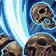
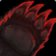

星界转移
90 秒（位面旅行者）· 持续 12 秒
所有伤害 −40%。全本唯一大减伤，优先留给下方路线里标「必做」的高压机制。
纳洛拉克的洞穴全程是无视护甲的全团物理咆哮、流血与冰霜持续伤，尾王回响重击单次约 101 万。元素萨满没有免疫，靠 90 秒星界转移盯紧固定点：囤宝狂人首发咆哮与第五发饕餮怒吼、寒冬哨兵寒冰暴雨、战争使者原始回响与纳洛拉克的回响重击；清毒图腾清腐坏补给后的剧毒孢子，净化灵魂驱饥荒雕像的饥肠辘辘，土元素（3 分钟）补星界空档。
四张手牌管住全本，外加一条驱散边界与五组必断读条。
所有伤害 −40%。全本唯一大减伤，优先留给下方路线里标「必做」的高压机制。
配始源羁绊不再嘲讽，改为最大生命值 +15%。补星界空档，主要用在尾王回响重击，囤宝狂人与冰川转好可兜底。
脚下 30 码每 1.5 秒清一名队友全部中毒。专清囤宝狂人腐坏补给之后的剧毒孢子。
驱饥荒雕像的饥肠辘辘（最大生命值 −15%，可叠加），开场两波和林道叠层就驱。
一场 +24 限时实录（展示真实冷却节奏，非每波强制照搬；具体取舍见下方路线）。
看到什么 → 按什么 → 为什么。带「必做」标签的高亮行是每把必做的关键动作。伤害数字是 +24 实测（含被吸收的部分），层数越高越大。


取自 +24 限时录像的元素天赋，英雄天赋先知。复制字符串，在游戏天赋界面点「导入」。
CYQAAAAAAAAAAAAAAAAAAAAAAAAAAAzMbbzMGjZZbZMmhZAAAAgFzsBDYAzGTgZBAmtZmZwCaDzYmlZmZmZMLzyMzywYmZBAYAgZGDDD
这四个防御与功能天赋不要动
参考录像里的常见改动：去掉幽魂步、静电充能换阵风、冰霜震击、图腾投射；去掉雷霆之爪换幽灵狼；去掉首席升腾者换飞升卓越、喷流；去掉先祖狼魂亲和、图腾集中换大地之盾、治疗链、元素环绕、塞拉赞恩的韧性。